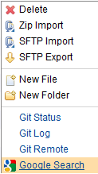

| orion.navigate.command | ||
|---|---|---|
|
|
|
|
| Plugging into the navigator | orion.navigate.openWith | |
The orion.navigate.command service is used to contribute commands that are relevant to a selected file or folder. When the service is executed, a file object or array of file objects is passed to the service's run method. The command can perform some operation on the provided files. If the command is simply linking to another page, a uriTemplate can be used to specify the link.
Implementations of orion.navigate.command may define the following function:
This method will only be called when the implementation does not define a uriTemplate property.
Implementations of orion.navigate.command may define the following attributes:
Here is a sample plug-in that contributes a link to a Google search for the selected file's name:
var provider = new eclipse.PluginProvider({postInstallUrl:"/plugin/list.html"});
provider.registerServiceProvider("orion.navigate.command", {}, {
image: "http://www.google.com/favicon.ico",
name: "Google Search",
id: "sample.commands.sample4",
forceSingleItem: true,
uriTemplate: "http://www.google.com/#q={Name}",
tooltip: "Link to google search for this file name"
});
provider.connect();
When this plug-in is installed, the user will see the google search command in the Navigator menu as follows:

For more examples of contributing Navigator commands see the sample commands plugin.
|
|

|
|
| Plugging into the navigator | orion.navigate.openWith |